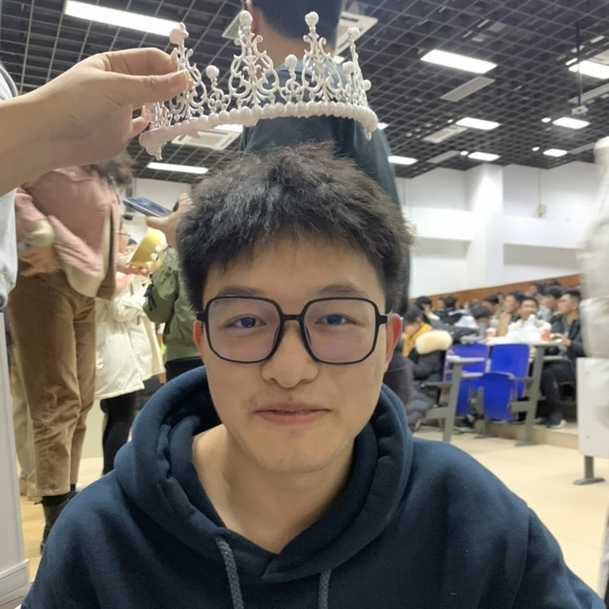

HKUST(GZ) · PhD Student
Jiayi Zhang
I am a PhD student at the Hong Kong University of Science and Technology (Guangzhou), advised by Professor Yuyu Luo. My research focuses on foundation agents, cross-environment evaluation, and reasoning optimization for LLM-based systems. I lead a research team at DeepWisdom and we are hiring research interns (Agent, RL, Optimization) and research engineer interns.
I love collaborating with undergraduate and master's students who are skilled at vibe coding, and I have already mentored two undergraduates to complete their first-author papers. Feel free to contact me.

Selected Publications
Environment Scaling
- AutoEnv: Automated Environments for Measuring Cross-Environment Agent Learning Jiayi Zhang (1st-author), Yiran Peng, Fanqi Kong, Cheng Yang, Yifan Wu, ... · 2025 · arXiv
- Position: Scalable Environments Drive Generalizable Agents Jiayi Zhang (1st-author), Fanqi Kong, Guibin Zhang, ... , Chenglin Wu, Bang Liu, Yuyu Luo · 2026 · arXiv
- AutoWebWorld: Synthesizing Infinite Verifiable Web Environments via Finite State Machines Yifan Wu, Yiran Peng, Yiyu Chen, Jianhao Ruan, Zhiyang Zhang, Cheng Yang, Jiayi Zhang (core-author), ... · 2026 · arXiv
Agentic Learning
- AFlow: Automating Agentic Workflow Generation Jiayi Zhang (1st-author), Jinyu Xiang, Zhaoyang Yu, Fengwei Teng, ... · 2024 · ICLR 2025 Oral
- Self-Supervised Prompt Optimization Jinyu Xiang, Jiayi Zhang (co-first-author), Zhaoyang Yu, Fengwei Teng, ... · 2025 · EMNLP Findings
- Robustflow: Towards Robust Agentic Workflow Generation Shengdong Xu, Jiayi Zhang (core-author), Shengqi Di, Yuyu Luo, ... · 2025 · arXiv
Agentic Reasoning
- AOrchestra: Automating Sub-Agent Creation for Agentic Orchestration Jianhao Ruan, Zhihao Xu, Yiran Peng, Jiayi Zhang (corresponding-author), ... · 2026 · arXiv
- Atom of Thoughts for Markov LLM Test-Time Scaling Fengwei Teng, Zhaoyang Yu, Quan Shi, Jiayi Zhang (core-author), Chenglin Wu, Yuyu Luo · 2025 · NeurIPS
- ReCode: Unify Plan and Action for Universal Granularity Control Zhaoyang Yu, Jiayi Zhang (core-author), ... , Chenglin Wu · 2025 · arXiv
- Advances and Challenges in Foundation Agents Bang Liu, Xinfeng Li, Jiayi Zhang (co-first-author), Jinlin Wang, ... · 2025 · arXiv
User Centric Agents
- InteractComp: Evaluating Search Agents With Ambiguous Queries Mengxi Deng, Lijun Huang, Yani Fan, Jiayi Zhang (corresponding-author), ... · 2025 · arXiv
- InfoPO: Information-Driven Policy Optimization for User-Centric Agents Fanqi Kong, Jiayi Zhang (core-author), Mingyi Deng, Chenglin Wu, Yuyu Luo, Bang Liu · 2026 · arXiv
- OpenManus: An Open-Source Framework for Building General AI Agents Xinbing Liang, Jinyu Xiang, Zhaoyang Yu, Jiayi Zhang (core-author), ... · 2025 · Open-source project
Application
- MobileExperts: A Dynamic Tool-Enabled Agent Team in Mobile Devices Jiayi Zhang (1st-author), Chuang Zhao, Yihan Zhao, Zhaoyang Yu, ... · 2024 · arXiv
- Alpha-SQL: Zero-Shot Text-to-SQL using Monte Carlo Tree Search Boyan Li, Jiayi Zhang (core-author), Ju Fan, Yanwei Xu, ... · 2025 · ICML
- Data Interpreter: An LLM Agent for Data Science Sirui Hong, Yizhang Lin, Bang Liu, ..., Jiayi Zhang (core-author), ... · 2025 · ACL Findings